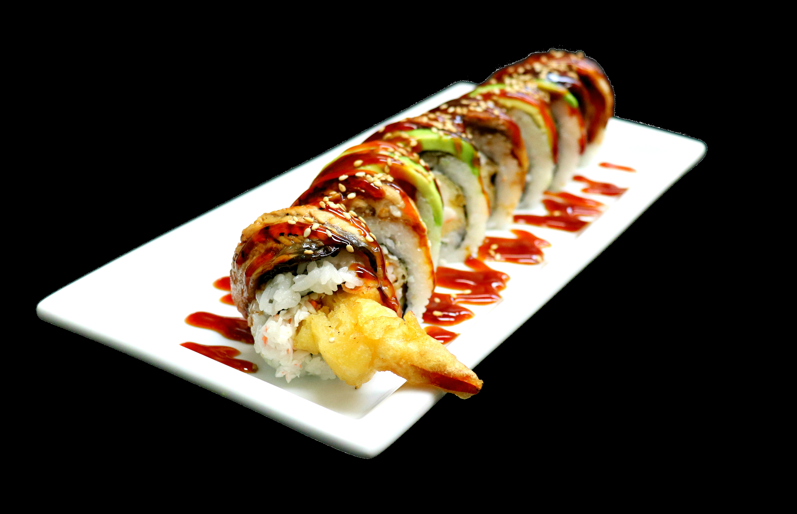

Miso Soup: (Tofu, Wakame, Green Onion) $2
Green Salad: (Lettuce Mix and House Ginger Ponzu Dressing) $3
Ocean Salad: (Seaweed Salad) $6

Steamed Rice: (House Rice made fresh) $3
Edamame: (Edamame with Salt, Garlic, or Spicy Sauce) $8
Shrimp and Vegetable Tempura: (Yams, Broccoli, Mushrooms, Zucchini, and Shrimp all Vegetable option available) $8

Gyoza: (Fried or Steamed Potstickers options available. Steamed normally come with Spicy Sauce and Green Onions and Fried come with Ponzu sauce) $6
Kimchi: (Spicy Cabbage topped with Spicy Seasoning) $5
Seared Tuna Salad: (Salad Mix with Seared Tuna and Ginger Ponzu dressing) $14
Miso Ramen: (Ramen Noodles, Cha Shu Pork, Corn, Wakame, Green Onion, and Tonkatsu Broth) $14
Tonkatsu Tonkatsu Ramen: (Ramen Noodles, Tonkatsu Pork, Cabbage, Wakame, Green Onion, Soft Boiled Egg, Black Garlic, and Tonkatsu Broth) $16
Tonkatsu Ramen: (Ramen Noodles, Cha Shu Pork, Wakame, Green Onion, Ginger, and Tonkatsu Broth) $13

Spicy Seafood Soup: (Ramen Noodles, Assorted Seafood, Green Onion, Wakame, and a 50/50 of Spicy Miso Broth and Tonkatsu Broth) $15
Udon Noodle Soup: (Udon Noodles, Tofu, Green Onion, Wakame, and Udon Broth) $9
Chicken Teriyaki Udon Soup: (Udon Noodles, Chicken Teriyaki, Tofu, Green Onion, Wakame, and Udon Broth) $13
Chicken A La Carte: (White Rice and Chicken Teriyaki) $11
Salmon A La Carte: (White Rice and Salmon Teriyaki) $13
New York Steak A La Carte: (White Rice and NY Steak Teriyaki) $16
Ribeye A La Carte: (White Rice and Ribeye Teriyaki) $19
Chicken Donburi: (White Rice, Assorted Vegetables, Chicken Teriyaki and a side of Miso Soup and Green Salad) $18

Salmon Donburi: (White Rice, Assorted Vegetables, Salmon Teriyaki and a side of Miso Soup and Green Salad) $20
New York Donburi: White Rice, Assorted Vegetables, New York Teriyaki and a side of Miso Soup and Green Salad) $23
Ribeye Donburi: (White Rice, Assorted Vegetables, Chicken Teriyaki and a side of Miso Soup and Green Salad) $26
Add Fried Rice to any Bowl for $4!
Avocado Maki: (Avocado inside) $5
Kappa Maki: (Cucumber inside) $5
Vegetarian Roll: (Lettuce Mix, Cucumber, Avocado, Carrots, and Sprouts inside) $6

California Roll: (Cucumber, Avocado, and Crab Mix inside) $7
Spicy California Roll: (Cucumber, Avocado, and Spicy Crab Mix inside) $7
Shrimp Tempura Roll Roll: (Cucumber, Avocado, and Tempura Shrimp inside and topped with Masago and Unagi Sauce) $8
Philadelphia Roll: (Cucumber, Avocado, Cream Cheese and Smoked Salmon inside and topped with Masago) $9

Crunchy California Roll: (Cucumber, Avocado, and Crab Mix inside, Deep Fried, and topped with Orange Cream Sauce) $9
Tiger Roll: (Cucumber and Tempura Crab inside and topped with Shrimp, Avocado, and Unagi Sauce) $14
Dragon Roll: (Crab Mix and Tempura Shrimp inside and topped with Unagi, Avocado and Unagi Sauce) $15

White Dragon Roll: (Unagi and Chipotle Cream Sauce underneath Cucumber, Avocado, Cream Cheese, and Tempura Shrimp, and topped with Crab Mix) $15
Shogun Roll: (Spicy Tuna, Green Onion and Avocado inside, Deep Fried, with Spicy Crab Mix, Unagi Sauce, and Nitro Sauce) $16
Tekka Maki: (Tuna inside) $7
Spicy Tuna Roll: (Spicy Tuna, Cucumber and Avocado inside) $8
Salmon Roll: (Fresh Salmon, Cucumber, and Avocado inside and topped with Masago) $8
Scorpion Roll: (Soft Shell Crab, Shrimp Tempura, Spicy Tuna, Avocado, Cucumber inside and topped with Unagi Sauce, Sriracha Sauce, and Spicy Mayo) $18

Raging Samurai Roll: (Soft Shell Crab, Unagi, Spicy Hamachi, Avocado, Jalapeno inside and topped with Unagi Sauce and Agent Orange Sauce) $18
Red Dragon Roll: (Tempura Shrimp and Crab Mix inside and topped with Spicy Tuna, Unagi Sauce, Spicy Mayo, and Crunchies) $15

Nitro Roll: (Albacore, Cucumber, and Green Onion inside and topped with Fresh Salmon, Avocado, Nitro Sauce, and Tobiko) $14
I Heart Tuna Roll: (Spicy Tuna, Cucumber, and Cilantro inside and topped with Seared Tuna, Unagi Sauce, and Green Onion) $13
Spicy Salmon Tempura Roll: (Fresh Salmon, Cream Cheese, Avocado, and Jalapeno inside and topped with Spicy Mayo and Unagi Sauce) $13

Rainbow Roll: (Crab Mix, Cucumber and Avocado inside and topped with Assorted Fish) $13
Albacore: $6
Ebi (Shrimp): $6
Maguro (Tuna): $6

Hamachi (Yellowtail): $6
Hotate (Scallops) $6
Ika (Squid): $6
Inari (Tofu Skin): $6
Masago (Fish Eggs): $6

Ono (Butterfish): $6
Saba (Mackerel): $6
Salmon: $6

Seared Tuna: $6
Tai (Red Snapper): $6
Unagi (Eel): $6

Tamago (Sweet Egg): $6
Tobiko (Fish Eggs): $6
Albacore: $11
Ebi (Shrimp): $11
Hamachi (Yellowtail): $11
Hotate (Scallops) $11
Ika (Squid): $11

Inari (Tofu Skin): $11
Maguro (Tuna): $11
Masago (Fish Eggs): $11
Saba (Mackerel): $11

Ono (Butterfish): $11
Salmon: $11
Seared Tuna: $11

Tai (Red Snapper): $11
Tamago (Sweet Egg): $11
Tobiko (Fish Eggs): $11
Unagi (Eel): $11